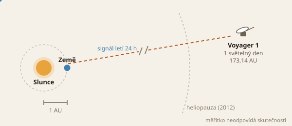

Voyager 1: jeden světelný den od Země
Sonda Voyager 1 odstartovala 5. 9. 1977. Dne 18. 11. 2026 v 11:16:07 středoevropského času je od Země tak daleko, že její signál letí rychlostí světla celých 24 hodin. Je to první objekt vyrobený člověkem, který dosáhl vzdálenosti jednoho světelného dne.
Hodnoty počítá stránka z modelu: sonda letí přímo od Slunce rychlostí 16,917 km/s ve směru souhvězdí Hadonoše, Země obíhá kolem Slunce. Model je nastavený tak, aby vzdálenost od Země přesně odpovídala jednomu světelnému dni v okamžiku udaném NASA. Odpočet do světelného roku se počítá od Slunce a předpokládá stálou rychlost sondy. Přesné hodnoty ukazuje 3D pohled NASA níže.
Kde je Voyager 1

Astronomická jednotka (AU) je střední vzdálenost Země od Slunce, 149 597 870,7 km. Světlo ji urazí za 8 minut a 19 sekund. Jeden světelný den je 25,902 miliardy km, tedy 173,14 AU. Voyager 1 je od Země zhruba 173× dál než Slunce.
Sonda prolétla kolem Jupiteru a Saturnu. Od té doby se vzdaluje od Slunce po téměř přímé dráze. V roce 2012 prošla heliopauzou — hranicí, kde končí vliv slunečního větru — a letí mezihvězdným prostorem. Na jeden světelný den se dostala za 49 let, 2 měsíce a 11 dní.
Vzdálenost od Slunce roste rovnoměrně. Vzdálenost od Země během roku kolísá, protože Země obíhá kolem Slunce a je k sondě jednou blíž, jindy dál. Podle výpočtu na této stránce se několik měsíců v roce vzdálenost od Země dokonce zmenšuje. Pohyb sondy však převáží a pod jeden světelný den se už nevrátí.
Dvojče Voyager 2 letí jiným směrem a pomaleji. Jednoho světelného dne by dosáhlo v listopadu 2035.
Spojení se Zemí
Rádiový signál se šíří rychlostí světla. Příkaz ze Země letí k sondě 24 hodin a odpověď stejně dlouho zpátky. Ověření jednoho příkazu tak trvá dva dny.
Napájení
Sondu napájí radioizotopový termoelektrický generátor: rozpad plutonia uvolňuje teplo a termočlánky ho mění na elektřinu. Výkon s rozpadem paliva klesá, každá sonda ztrácí asi 4 W za rok.
Každý Voyager nesl 10 sad vědeckých přístrojů. Při plánovaném natočení sondy 27. 2. 2026 klesl výkon nečekaně níž. NASA proto 17. 4. 2026 vypnula přístroj pro nízkoenergetické nabité částice (LECP). Na Voyageru 1 dál pracují dva přístroje: magnetometr a detektor plazmových vln. Vypnutí má prodloužit provoz zhruba o rok. Na další úsporu NASA připravila přepojení napájení nazvané „Big Bang“. Zkoušku plánovala nejdřív na Voyageru 2, který má víc výkonu a je blíž Zemi.
Palubní počítače
Sondu řídí tři počítače. Řídicí počítač (CCS) vykonává příkazy a hlídá poruchy. Počítač orientace (AACS) natáčí sondu a anténu k Zemi. Datový počítač (FDS) sbírá data z přístrojů a připravuje je k odeslání. Každý je zdvojený, aby při poruše převzala práci záložní část.
CCS a AACS mají po 4 kiloslovech paměti s 18bitovým slovem. Procesory jsou sestavené z jednotlivých logických obvodů řady 7400. Program běží bez operačního systému. CCS zná 64 instrukcí a mezi nimi chybí násobení a dělení.
V listopadu 2023 přestal Voyager 1 posílat čitelná data. Příčinou byl vadný paměťový čip v FDS. Opravit ho nešlo, a tak inženýři rozdělili postižený program na části a uložili je do volných míst zbylé paměti. Upravili odkazy mezi částmi, aby program dál fungoval. Sonda potvrdila opravu 20. 4. 2024.
3D pohled NASA
Aplikace NASA Eyes on the Solar System ukazuje polohu sondy a její aktuální vzdálenost podle dat NASA. Pohledem se otáčí myší, kolečkem se přibližuje.
Zdroje
- NASA: Where Are Voyager 1 and Voyager 2 Now? — okamžik jednoho světelného dne 18. 11. 2026 v 2:16:07 PST, vzdálenost 25,902 miliardy km.
- EarthSky: Voyager 1 to reach 1 light-day from Earth — start 5. 9. 1977, heliopauza 2012, 173,14 AU, 49 let, 2 měsíce a 11 dní, Voyager 2 v listopadu 2035.
- ScienceDaily (NASA): NASA shuts down 49-year-old Voyager 1 instrument — napájení z plutonia, ztráta asi 4 W za rok, 10 sad přístrojů, pokles výkonu 27. 2., vypnutí LECP 17. 4. 2026, dva zbývající přístroje, plán „Big Bang“ a zkouška na Voyageru 2.
- Heavens-Above: Spacecraft escaping the Solar System — rychlost Voyageru 1 vůči Slunci 16,917 km/s a Voyageru 2 15,255 km/s, směr sondy (výchozí hodnoty pro počítadlo).
- TheSkyLive: Voyager 1 — souřadnice sondy v souhvězdí Hadonoše a kontrolní vzdálenost od Země pro ověření počítadla.
- Hackaday: The Computers of Voyager — tři počítače, zdvojení, 4 kiloslova paměti, 18bitové slovo, obvody řady 7400, 64 instrukcí.
- NASA JPL: Voyager 1 Resumes Sending Engineering Updates to Earth — vadný čip FDS, přesun programu po částech, potvrzení 20. 4. 2024.
- Wikipedia: Astronomical unit — definice 1 AU a doba letu světla od Slunce k Zemi.
- Wikipedia: Light-year — světelný rok jako dráha světla za juliánský rok (365,25 dne).